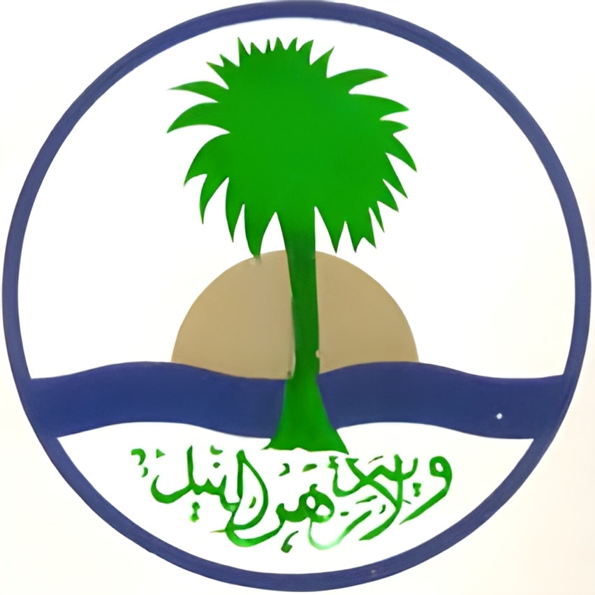

نبذة عن ولاية الخرطوم:
العاصمة القومية للسودان ولاية الخرطوم وعاصمتها مدينة الخرطوم (العاصمة الوطنية) تقع في وسط السودان عند ملتقى
النيلين النيل الابيض والنيل الازرق الذين يكونان نهر النيل اطول نهر في افريقيا
وتحتوي الولاية تنوع ثقافي حيث تضم ولاية مجموعة متنوعة من الثقافات و القبائل والقوميات من جميع انحاء البلاد
والدول المجاورة ولذلك تعتبر الولاية الاكثر كثافة سكانية بين ولايات السودان.
كما تتمتع الولاية بتوفر موارد طبيعية متنوعة مثل الاراضي الزراعية الخصبة التي تحوي محاصيل مختلفة من الخضر
والفواكه بمساحة تقدر ب 583.209 فدان والغابات,
حيث تغطي المراعي والغابات مساحة تقدر ب 2.1 مليون فدان تمتد في منطقتي شرق وغرب النيل,
والموارد المائية من المياه الجوفية والانهار التي تحوي مجموعة من السدود لتوليد الطاقة, وتقدر الثروة الحيوانية
للولاية بـ 728.559 وحدة حيوانية.
التقسيم الاداري للولاية:
تنقسم ولاية الخرطم الى سبع محليات ادارية
- محلية جبل اولياء
- محلية امدرمان
- محلية ام بدة
- محلية الخرطوم
- محلية الخرطوم بحري
- محلية شرق النيل
- محلية محلية كرري

فندق ليبيا والنيل الابيض

مدينة الخرطم

ضفة النيل الابيض قرب كبري توتي
جزيرة توتي وفندق ليبيا
إقليم دارفور
أطلق اسم دارفور على الجزء الغربي من السودان تيمنا بشعب "الفور" الذين كان لهم سلطن فيها قبل الاستعمار، ومن القبائل التي تعيش في هذا الإقليم الفور، الزغاوة، مساليت، وغيرهم.
تقدر مساحة إقليم دارفور بخمس مساحة السودان وتقسم الى خمس ولايات
- ولاية شمال دارفور وعاصمتها الفاشر
- ولاية وسط دارفور وعاصمتها زالنجي
- ولاية شرق دارفور وعاصمتها الضعين
- ولاية غرب دارفور وعاصمتها الجنينة
- ولاية جنوب دارفور وعاصمتها نيالا

تتميز دارفور بالأراضي الخصبة والمناخات المتنوعة حيث تكثر فيها أشجار الهشاب التي تستخرج منها الصمغ العربي وحقول القطن والتبغ جنوب غربي الإقليم ومزارع القمح والذرة والدخن وغيرها، كما يمتاز الإقليم بثروة حيوانية كبيرة من الإبل والغنم والبقر، ووجود البترول والمعادن.
جنوب دارفور
جبل هاري حول قرية دوجو

جنوب دارفور
وادي دوجو
وسط دارفور
المزارع في زالنجي

دارفور
شكل الوديان ومناظر الطبيعية في انحاء اقليم دارفور

وسط دارفور
شلال في سلسلة جبل مرة
وسط دارفور
جبل مرة

دارفور
مزرعة
شمال دارفور
مشاهد من احد ارياف شمال دارفور
إقليم كردفان:
يقع إقليم كردفان وسط السودان ويضم عدد من القبائل منها الكبابيش والكواهلة والبديرية والجوامعة والشويحات والغديات والمسيرية. يتمتع الإقليم على العديد من الموارد مثل الموارد الزراعية من الأراضي الخصبة والغابات والثروات الحيوانية، بالإضافة الى حقول النفط والمعادن، ويضم الإقليم أكبر واهم الأسواق المصدرة للصمغ العربي، ويعتمد الإقليم على الزراعة المطرية لينتج العديد من المحاصيل أهمها الدخن، الذرة، القطن، الكركديه، السمسم، الفول السوداني، والتبلدي.
وينقسم الاقليم الى ثلاثة ولايات:
- ولاية شمال كردفان وعاصمتها الأبيض
- ولاية غرب كردفان وعاصمتها الفولة
- ولاية جنوب كردفان وعاصمتها كادوقلي


الجزء الشرقي من السودان يضم ثلاثة ولايات
ولاية البحر الأحمر وعاصمتها بورتسودان:
تمثل الولاية بوابة بحرية للخارج عبر ميناء بورتسودان، وتتميز الولاية بامتداد الجبال فيها من الشمال الى الجنوب تتخللها السهول القاحلة مثل جبال الاحمر، السهل الساحلي تغطيه الصخور الرسوبية التي يكون اغلبها من الحجر الجيري المرجاني، في الجانب الغربي من الولاية توجد التلال والهضاب. تنحدر من الهضبة العديد من المجاري المائية على شكل وديان وخيران أهمها خور بركة، خور عرب، ووادي الرئيب وخور اربعات.

يسود الولاية مناخ جاف مع امطار شتوية قليلة، يعتبر فصب الصيف فيها حارا جدا وكثير الرطوبة.
من اشهر القبائل في الولاية الأمرار، الهندوة، الشاريين.
ولاية كسلا وعاصمتها مدينة كسلا:
وتقع شرق السودان قرب الحدود الارترية. تتميز الولاية بطبيعتها الخلابة وحدائقها العامرة، ويجد بها مشاريع عديدة منها مشروع خشم القربة ومشاريع انتاج قصب السكر والقمح والذرة
تتنوع تضاريس كسلا من سهول رملية الى وديان موسمية أهمها نهر القاش، بالإضافة كتل جبيلة أبرزها جبال كسلا وتوتيل والتاكا.
- مصادر المياه من انهار وامطار ومياه جوفية
- الأراضي الزراعية الشاسعة والخصبة التي تغطي اكثر من 40% من أراضي الولاية
- الثروة الحيوانية والهائلة والمتنوعة والتي تقدر بنحو 4,3 مليون راس بجانب الدواجن والاسماك
- الثروة الغابية والمراعي الطبيعية ووجود المحاجر الغنية بالمعادن المختلفة والمواد الجيرية وصخور الجرانيت
من القبائل التي تسكن كسلا: الهندوة وبني عامر والشكرية والرشايدة والحباب والفادنية والشايقية الهاسو والحنلقة والحلفاويين.
ولاية القضارف وعاصمتها مدينة القضارف:
تقع الولاية شرق السودان. وتتميز بنطاقين مناخين حيث تقع المناطق الشمالية والشمالية الغربية في نطاق المناخ شبه الجاف والذي يتميز بموسم امطار صيفية (يوليو – أكتوبر)، اما المناطق الشرقية والجنوبية فتقع في إطار المناخ الرطب. كما تمتاز الولاية بالأرض الطينية تتخللها بعض المرتفعات، ويمكن تقسيمها الى، منطقة الأراضي المرتفعة جنوب شرق الولاية، منطقة السهول وهي السائدة في الولاية، منطقة الاودية وتشمل هذه الأراضي الرسوبية حول الأنهار الموسمية (نهر عطبرة، ستيت، الرهد وباسلام).
بالنسبة لجغرافيا الولاية فالتربة الطينية السوداء هي السائدة في الولاية وتتميز بارتفاع نسبة حبيبات الطين عالية الخصوبة. وتعبر الامطار اهم مصدر للمياه في الولاية بالإضافة الى عدد من محطات المياه والابار.
يتوزع معظم سكان الولاية اهليا على خمسة نظارات هي نظارة الشكرية ونظارة دار أبكر ونظارة قلع النحل ونظارة الضباينة إضافة لوكالة نظارة البني عامر مع وجود مجموعات عرقية كبيرة وقبائل كالمساليت والبوادرة واللحويين وكنانة.
كسلا
مدينة كسلا وجبال توتيل
كسلا
مزارع كسلا وجبال توتيل

كسلا
مسجد وسط المدينة في مدنين كسلا

كسلا
مسجد وسط المدينة في العاصمة كسلا

البحر الاحمر
ميناء بورتسودان

البحر الاحمر
مدينة بورتسودان
البحر الاحمر
جبال حول بورتسودان
القضارف
ريف القضارف

القضارف
المراعي الخضراء في القضارف
ولاية الجزيرة وعاصمتها ود مدني:
تتميز الولاية بموقعها وسط السودان وتعتبر أكبر مصدر دخل للسودان (مشروع الجزيرة اكبر مشروع قومي في السودان)، وتتمتع الولاية بوفرة من الموارد البشرية والطبيعية أهمها الأراضي الزراعية الواسعة انحاء الولاية والغابات والمراعي الطبيعية.

معظم سطح الولاية مكون من سهول مسطحة ولا توجد بها مرتفعات سوى بعض التلال في بعض الأجزاء الشرقية والجنوبية، وينحدر السطح بصفة عامة ناحة الشمال باتجاه مجاري النيل والتي من أهمها النيل الازق ونهر الرهد.
تقع الولاية ضمن حزام المناخ الجاف والذي يتميز بأمطاره الموسمية.
ولاية سنار وعاصمتها مدينة سنار:
تقع في الجزء الجنوبي الشرقي من البلاد في الحزام السوداني المطير في منطقة السافنا الغنية وهي بذلك تتمتع بمناخ حار ممطر. أراضي الولاية عبارة عن سهول منبسطة وشبه منبسطة تنحدر قليلا ناحية الشمال وتمثل امتداد للسهول الطينية الوسطى.
يجري النيل الأزرق بطول ارض ولاية سنار ويشكل مصدرا لتوليد الكهرباء عبر خزان سنار، والمصدر الرئيسي لري المشروعات الزراعية الكبرى كالجزيرة، ومن المجاري المائية الموسمية في ولاية سنار نهرا الدندر والرهد.
من اهم المحاصيل الزراعية بالولاية القطن، الصمغ العربي، زهرة دوار الشمس، السمسم، المانجو، الجوافة، الموز، الذرة، فول الصويا، وقصب السكر الذي يعد محور صناعة السكر في الولاية.
مملكة سنار: كانت مملكة سنار حاضرة خلال الفترة 1504 – 1821 م كواحدة من اهم الممالك السودانية، حيث احتضنت سنار حضارة مملكة الفونج متعددة الثقافات والاعراق وبسطت نفوذها على السلطنات والممالك والاقاليم المحيطة في مملكة علوة بعاصمتها سوبا.
ولاية النيل الأبيض وعاصمتها مدينة ربك:
تقع في الجزء الجنوبي من البلاد وتعد اهم مصدر للسكر في السودان حيث يوجد بها مصنع سكر كنانة ومصنع سكر عسلاية، كما تنتشر في اغلب مدن الولاية صناعة الزيوت ومحالج القطن وصناعة الحلويات وصناعة الجبن الأبيض وتعليب الأسماك. تمتلك الولاية أراضي شاسعة صالحة للزرعة وتوجد بها مجموعة من المشاربع الزراعية الموسمية التي تعتمد على الامطار عدا مشروع أم جر حيث يعتمد على الري الانسيابي من مياه النيل. كمت تنتج الولاية حوالي 70% من المحصول الكلي لاسماك المياه العذبة بالسودان.

ولاية النيل الأزرق وعاصمتها الدمازين:
من ولايات السودان الجنوبية يقطعها النيل الأزرق من الشمال الى الجنوب، وتعتبر منطقة النيل الأزرق من اغنى مناطق السودان من حيث الثراء البيئي والتنوع المناخي حيث يوجد مناخ السافنا الغنية بأمطارها الغزيرة، كما تحيط الولاية مساحات غابية شاسعة وغابات نيلية تنحصر على مجرى النيل الأزرق وجبال الانقسنا ولاية سنار مع النيل الأزرق وجبال الانقسنا وفازغلي، وهنالك الكثير من المجاري المائية الموسمية (خور تمت، خور الدهب، خور الياس...) وتكثر أشجار الاكيشيا مثل اللعوت، الانداري، الدوم، الطلح، الهشاب، الهجليج، العرديب، القرع، والكثير من أنواع الأشجار الأخرى. كما تكثر تمتع الولاية بالكثير من المحصولات البستانية، وتكثر بها زراعة الموز والموالح واشجار المانجو.

يضم مجتمع جنوب النيل الأزرق على معظم قبائل السودان المختلفة وتضم ولاية النيل الأزرق العديد من القبائل منها (الهمج، الكدالو القمز، البرتا، القباوين، الدوالة، الانقسنا، الرقاريق، السركم، الجمجم، البرون، الادك، كنانة، الكوما، القنزا، بلدقوا، جبلاوين، فونج، كماتير، مابان، وطاويط، البني شنقول، حمدة، هوسا، فلاتة، برنو، قبائل من شمال السودان، مجموعات من قبائل غرب السودان، تاما، زغاوة، فور، برقد، ميما).

ولاية الجزيرة
العاصمة ود مدني

ولاية النيل الابيض
ضفاف النيل الابيض
.jpg)
ولاية الجزيرة
مزارع الولاية
ولاية الشمالية وعاصمتها دنقلا:
تقع الولاية في شمال السودان تحدها من الشمال جمهورية مصر، يقطعها النيل من الشمال الى الجنوب وتعتبر ولاية الأكبر من حيث المساحة، وتتميز الولاية بمزارع النخيل والمساحات الصحراوية الواسعة والاثار العتيقة.
تحتوي الولاية على العديد من المدن التاريخية مثل مدينة حلفا القديمة (وادي حلفا) التي يعود عهدها الى الحضارة النوبية التي كانت تعج بالاثار النوبية والمسيحية مثل معبد بوهين ومعبد سمنة. ومن المدن التاريخية مدينة عبري وكرمة التي يعود تاريخها الى العصر الحجري وكانت من اهم عواصم الممالك النوبية القديمة.

يتكون السكان من قبائل مختلفة (شايقية، بديرية، محس، دناقلة، حلفاويين، قراريش كبابيش، هواوير، سكوت) اما سكان مدينة دنقلا العرضي الأصليين فيسمون بالفلاليح وينقسمون الى عدد من العوائل المترابطة.
ولاية نهر النيل وعاصمتها الدامر:
تقع شمال السودان ويمر عبرها نهر النيل الذي يلتقي يه نهر عطبرة عند مدينة عطبرة (المقرن)، تعتمد الولاية في اقتصادها على الثروة الحيوانية والسمكية والزراعة التقليدية والحديثة كما يوجد بالولاية عدد من المشاريع الزراعية. وتشتهر الولاية بصناعة الاسمنت ووجود معادن مثل الذهب، كما تعتبر الولاية مهد للحصارات القديمة مثل البرجاوية وهي منطقة اثرية، ومنطقة النقعة والمصورات التي يوجد بها معبدي الشمس والأسد.
ولاية الشمالية
مشاهد من انحاء الولاية

ولاية الشمالية
مراعي دنقلا
ولاية الشمالية
الاهرامات النوبية

ولاية الشمالية
الاهرامات النوبية
ولاية الشمالية
مدينة دنقلا القديمة

ولاية الشمالية
الصحراء النوبية

ولاية نهر النيل
مسجد